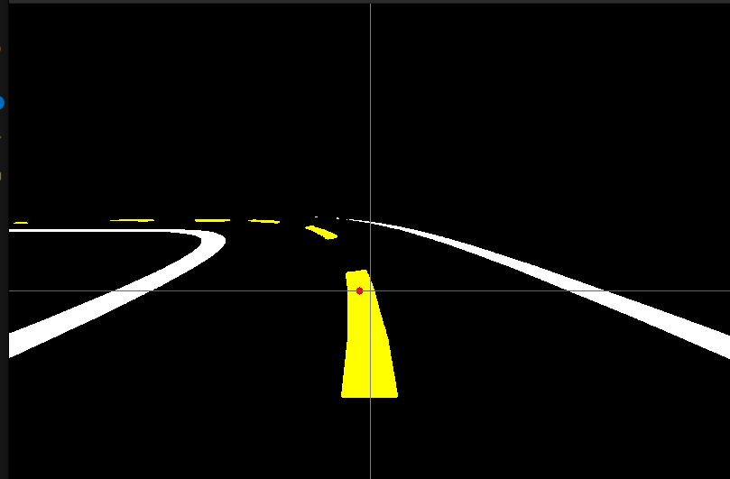

Carla client
Index:
- Connection with server
- Deepracer Camera settings
- Client time vs real time
- HSV Filter and mask segmentation
- Generate Dataset
(Map modified as the ramp has been added)
Connection with server
Once the package is compressed at the carla root folder:
make package
Execute
CarlaUE4.sh
located at :
/Dist/CARLA_Shipping_0.9.15.2-2-gb23c01ae4-dirty/LinuxNoEditor
Now the server will be available to be connected to. Note that it can be launched with the flag ---RenderOffscreen to make it handier to use later.
Then for the client, you have to create a python file (.py).
We are going to use manualcontrol.py as an example, that will allow us to control the deepracer in the world we have just spawned. We will be using the keys W A S D as input: - w: Move forward - A: Turn left - S: Brake - D: Turn right
First, you must import the required modules:
import carla
import time
import pygame
import numpy as np
-
carla: CARLA client API
-
time: for sleep/wait operations
-
pygame: for keyboard input and display
-
numpy: to process camera image data
Configuration for the CARLA server and the vehicle blueprint.
HOST = '127.0.0.1'
PORT = 2000
VEHICLE_MODEL = 'vehicle.finaldeepracer.aws_deepracer'
Initialize Pygame for displaying the RGB camera feed.
pygame.init()
WIDTH, HEIGHT = 800, 600
screen = pygame.display.set_mode((WIDTH, HEIGHT))
pygame.display.set_caption("DeepRacer")
Connect to CARLA, set timeout, and load a specific map (Town01).
client = carla.Client(HOST, PORT)
client.set_timeout(5.0)
world = client.get_world()
client.load_world('Town01')
Set sunny weather with clouds but no rain or fog.
weather = carla.WeatherParameters(
cloudiness=80.0,
precipitation=0.0,
sun_altitude_angle=90.0,
fog_density=0.0,
wetness=0.0
)
world.set_weather(weather)
Spawn the DeepRacer Vehicle. Get the blueprint for the AWS DeepRacer vehicle.
blueprint_library = world.get_blueprint_library()
vehicle_bp = blueprint_library.find(VEHICLE_MODEL)
Set vehicle spawn location and attempt to spawn it. If it fails, the program exits.
spawn_point = carla.Transform(carla.Location(x=2.95, y=-3.7, z=0.6),
carla.Rotation(pitch=0, yaw=-90, roll=0))
vehicle = world.try_spawn_actor(vehicle_bp, spawn_point)
Attach an RGB Camera to the Vehicle.Configure the RGB camera sensor with resolution and field of view.
camera_rgb_bp = blueprint_library.find('sensor.camera.rgb')
camera_rgb_bp.set_attribute('image_size_x', str(WIDTH))
camera_rgb_bp.set_attribute('image_size_y', str(HEIGHT))
camera_rgb_bp.set_attribute('fov', '90')
Place and attach the camera to the vehicle.
camera_rgb_transform = carla.Transform(carla.Location(x=-1, z=0.5))
camera_rgb = world.spawn_actor(camera_rgb_bp, camera_rgb_transform, attach_to=vehicle)
Process RGB Image from Camera. Convert raw image data into a Pygame surface for display.
def process_rgb(image):
global camera_image_rgb
array = np.frombuffer(image.raw_data, dtype=np.uint8)
array = np.reshape(array, (image.height, image.width, 4))[:, :, :3]
array = array[:, :, ::-1]
camera_image_rgb = pygame.surfarray.make_surface(array.swapaxes(0, 1))
Start listening to camera stream and process frames in real time:
camera_rgb.listen(lambda image: process_rgb(image))
Start the control loop and poll the keyboard.
control = carla.VehicleControl()
running = True
while running:
keys = pygame.key.get_pressed()
if keys[pygame.K_w]: ...
if keys[pygame.K_a]: ...
if keys[pygame.K_d]: ...
if keys[pygame.K_s]: ...
control.hand_brake = keys[pygame.K_SPACE]
Apply control values to the vehicle.
vehicle.apply_control(control)
Event Handling and Display
for event in pygame.event.get():
if event.type == pygame.QUIT or (event.type == pygame.KEYDOWN and event.key == pygame.K_ESCAPE):
running = False
if camera_image_rgb:
screen.blit(camera_image_rgb, (0, 0))
pygame.display.flip()
Here is the FULL CODE:
import carla
import time
import pygame
import numpy as np
HOST = '127.0.0.1'
PORT = 2000
VEHICLE_MODEL = 'vehicle.finaldeepracer.aws_deepracer'
pygame.init()
WIDTH, HEIGHT = 800, 600
screen = pygame.display.set_mode((WIDTH, HEIGHT))
pygame.display.set_caption("DeepRacer")
client = carla.Client(HOST, PORT)
client.set_timeout(5.0)
world = client.get_world()
client.load_world('Town01')
weather = carla.WeatherParameters(
cloudiness=80.0,
precipitation=0.0,
sun_altitude_angle=90.0,
fog_density=0.0,
wetness=0.0
)
world.set_weather(weather)
blueprint_library = world.get_blueprint_library()
vehicle_bp = blueprint_library.find(VEHICLE_MODEL)
spawn_point = carla.Transform(carla.Location(x=2.95, y=-3.7, z=0.6),
carla.Rotation(pitch=0, yaw=-90, roll=0))
vehicle = world.try_spawn_actor(vehicle_bp, spawn_point)
if not vehicle:
print("unable to spanw")
exit()
print(f"vehicle {VEHICLE_MODEL} spaned at {spawn_point.location}")
camera_rgb_bp = blueprint_library.find('sensor.camera.rgb')
camera_rgb_bp.set_attribute('image_size_x', str(WIDTH))
camera_rgb_bp.set_attribute('image_size_y', str(HEIGHT))
camera_rgb_bp.set_attribute('fov', '90')
camera_rgb_transform = carla.Transform(carla.Location(x=-1, z=0.5))
camera_rgb = world.spawn_actor(camera_rgb_bp, camera_rgb_transform, attach_to=vehicle)
camera_image_rgb = None
def process_rgb(image):
global camera_image_rgb
array = np.frombuffer(image.raw_data, dtype=np.uint8)
array = np.reshape(array, (image.height, image.width, 4))[:, :, :3]
array = array[:, :, ::-1]
camera_image_rgb = pygame.surfarray.make_surface(array.swapaxes(0, 1))
camera_rgb.listen(lambda image: process_rgb(image))
control = carla.VehicleControl()
running = True
while running:
keys = pygame.key.get_pressed()
if keys[pygame.K_w]:
control.throttle = min(control.throttle + 0.01, 0.8)
else:
control.throttle = 0.0
control.brake = min(control.brake + 0.1, 1.0) if keys[pygame.K_s] else 0.0
if keys[pygame.K_a]:
control.steer = max(control.steer - 0.05, -1.0)
elif keys[pygame.K_d]:
control.steer = min(control.steer + 0.05, 1.0)
else:
control.steer = 0.0
control.hand_brake = keys[pygame.K_SPACE]
vehicle.apply_control(control)
for event in pygame.event.get():
if event.type == pygame.QUIT or (event.type == pygame.KEYDOWN and event.key == pygame.K_ESCAPE):
running = False
if camera_image_rgb:
screen.blit(camera_image_rgb, (0, 0))
pygame.display.flip()
camera_rgb.destroy()
vehicle.destroy()
pygame.quit()
Now execute the code:
python3 manualcontrol.py
Deepracer Camera Settings
To replicate the same camera settings as the actual Deepracer (using the front POV camera). We will need these settings. They represent the location of the camera and its pitch, as it is a bit tilted and facing down.
camera_rgb_bp = blueprint_library.find('sensor.camera.rgb')
camera_rgb_bp.set_attribute('image_size_x', str(WIDTH))
camera_rgb_bp.set_attribute('image_size_y', str(HEIGHT))
camera_rgb_bp.set_attribute('fov', '120')
transform_front = carla.Transform(carla.Location(x=0.13, z=0.13), carla.Rotation(pitch=-30))
camera_front = world.spawn_actor(camera_rgb_bp, transform_front, attach_to=vehicle)
Client time vs real time
When using synchronous mode in CARLA, it is essential to run the simulator with a fixed time-step.
Otherwise, the physics engine will try to "catch up" for the time the client spent idle, leading to unrealistic or inconsistent physics.
What is Fixed Time-Step?
In fixed time-step mode, the simulation advances by the same time increment on every world.tick() call, regardless of how fast your computer is.
To enable this, we must set:
settings.synchronous_mode = True
settings.fixed_delta_seconds = 1.0 / 20.0 # 20 FPS
world.apply_settings(settings)
We want to observe the difference between:
The real time it takes for the computer to perform one simulation step (world.tick()), and
The callback frequency of the camera sensor (e.g. every time it sends an image frame).
We define a camera_callback() function that prints the frame number and timestamp:
def camera_callback(image):
print(f"[Frame {image.frame}] timestamp: {image.timestamp:.5f}")
Inside the main loop, we also measure and print the real time gap between ticks:
while running:
t1 = time.time()
world.tick()
t2 = time.time()
print(f"real time gap: {t2 - t1}")
We get this output:
real time gap: 0.0028502941131591797
real time gap: 0.0028717517852783203
[Frame 11578] timestamp: 162.86267
real time gap: 0.002864837646484375
[Frame 11579] timestamp: 162.91267
[Frame 11580] timestamp: 162.96267
real time gap: 0.0028464794158935547
[Frame 11581] timestamp: 163.01267
real time gap: 0.002921581268310547
real time gap: 0.0028870105743408203
[Frame 11582] timestamp: 163.06267
[Frame 11583] timestamp: 163.11267
real time gap: 0.0028617382049560547
[Frame 11584] timestamp: 163.16267
real time gap: 0.0031239986419677734
real time gap: 0.0028901100158691406
[Frame 11585] timestamp: 163.21267
[Frame 11586] timestamp: 163.26267
real time gap: 0.0029799938201904297
Interpretation
Real time gap: 0.0028 means that world.tick() is being executed quickly (~2.8 ms per step) (the computer is fast).
The camera callback prints roughly every 0.05 seconds, confirming it operates at the expected 20 FPS (1 / 20 = 0.05s).
This demonstrates that:
The simulation time advances deterministically by 0.05s per tick.
The real time your PC takes to simulate one frame can be much less than 0.05s.
This difference is expected and is the advantage of running the simulator as fast as possible while maintaining consistent simulation timing.
Here is the code to try this out:
import carla
import time
import pygame
import numpy as np
import matplotlib.pyplot as plt
HOST = '127.0.0.1'
PORT = 2000
VEHICLE_MODEL = 'vehicle.finaldeepracer.aws_deepracer'
pygame.init()
WIDTH, HEIGHT = 800, 600
screen = pygame.display.set_mode((WIDTH, HEIGHT))
pygame.display.set_caption("DeepRacer - RGB y Segmentación Semántica")
client = carla.Client(HOST, PORT)
client.set_timeout(5.0)
world = client.get_world()
#FPS
settings = world.get_settings()
settings.synchronous_mode = True
settings.fixed_delta_seconds = 1.0 / 20.0
world.apply_settings(settings)
weather = carla.WeatherParameters(
cloudiness=80.0,
precipitation=0.0,
sun_altitude_angle=90.0,
fog_density=0.0,
wetness=0.0
)
world.set_weather(weather)
blueprint_library = world.get_blueprint_library()
vehicle_bp = blueprint_library.find(VEHICLE_MODEL)
spawn_point = carla.Transform(
carla.Location(x=3, y=-1, z=0.5),
carla.Rotation(yaw=-90)
)
vehicle = world.try_spawn_actor(vehicle_bp, spawn_point)
if not vehicle:
print("Error spawning")
exit()
camera_rgb_bp = blueprint_library.find('sensor.camera.rgb')
camera_rgb_bp.set_attribute('image_size_x', str(WIDTH))
camera_rgb_bp.set_attribute('image_size_y', str(HEIGHT))
camera_rgb_bp.set_attribute('fov', '120')
transform_front = carla.Transform(carla.Location(x=0.13, z=0.13), carla.Rotation(pitch=-30))
transform_thirdpers = carla.Transform(carla.Location(x=-1, z=0.75))
camera_front = world.spawn_actor(camera_rgb_bp, transform_front, attach_to=vehicle)
def camera_callback(image):
print(f"[Frame {image.frame}] timestamp: {image.timestamp:.5f}")
camera_front.listen(camera_callback)
control = carla.VehicleControl()
running = True
while running:
# Move on to the next iteration with world.tick()
t1 = time.time()
world.tick()
t2 = time.time()
print(f"real time gap: {t2-t1}")
camera_rgb.destroy()
vehicle.destroy()
pygame.quit()
HSV Filter and mask segmentation

This section explains how the script processes RGB images from the front camera of the Deepracer in CARLA to create semantic segmentation masks based on color, using the HSV color space.
We want to:
- Detect white and yellow lane markings on the road.
- Classify each pixel into a semantic class:
- 0: background (black)
- 1: white
- 2: yellow
- Save a colorized mask and use it for training or control logic.
hsv = cv2.cvtColor(rgb, cv2.COLOR_RGB2HSV)
The image is converted from RGB to HSV. HSV is preferred for color segmentation because this makes it easier to separate colors like white and yellow.
Create Color Masks:
Yellow Mask
lower_yellow = np.array([18, 50, 150])
upper_yellow = np.array([40, 255, 255])
mask_yellow = cv2.inRange(hsv, lower_yellow, upper_yellow)
White Mask
lower_white = np.array([0, 0, 200])
upper_white = np.array([180, 30, 255])
mask_white = cv2.inRange(hsv, lower_white, upper_white)
Create Semantic Class Mask
Initialize a blank mask.
Pixels detected as white are labeled as 1.
Pixels detected as yellow are labeled as 2.
mask_class = np.zeros_like(mask_white, dtype=np.uint8)
mask_class[mask_white > 0] = 1
mask_class[mask_yellow > 0] = 2
Convert Class Mask to RGB for Visualization
mask_rgb = np.zeros_like(rgb)
mask_rgb[mask_class == 1] = [255, 255, 255] # white
mask_rgb[mask_class == 2] = [255, 255, 0] # yellow
This gives a visually interpretable image where:
White areas are actual white ([255,255,255])
Yellow areas are yellow ([255,255,0])
Background remains black ([0,0,0])
This mask_rgb is used for display (cv2.imshow) and for dataset generation (cv2.imwrite).
Generate Dataset
To do so, we launch a script that creates a unique dataset folder based on the current timestamp:
currtime = str(int(time.time() * 1000))
DATASET_ID = "Deepracer_BaseMap_" + currtime
dataset/
└── Deepracer_BaseMap_<timestamp>/
├── rgb/ ← RGB images from the camera
├── masks/ ← Mask images with segmented classes
└── dataset.csv ← Metadata log
Each frame is processed and saved using the keep_data() function.
-
rgb_img is saved as-is.
-
mask_class_img is a colorized version of the class mask:
-
Pixels labeled 1 (white) become [255, 255, 255]
-
Pixels labeled 2 (yellow) become [255, 255, 0]
-
Background stays black
-
RGB_DIR = os.path.join(DATASET_ID, "rgb")
MASK_DIR = os.path.join(DATASET_ID, "masks")
CSV_PATH = os.path.join(DATASET_ID, f"dataset.csv")
def keep_data(timestamp, rgb_img, mask_class_img, accel, steer, brake, speed, heading):
...
cv2.imwrite(os.path.join(RGB_DIR, rgb_name), rgb_img)
cv2.imwrite(os.path.join(MASK_DIR, mask_name), cv2.cvtColor(mask_class_img, cv2.COLOR_RGB2BGR))
Each image is associated with a row in the CSV file:
writer.writerow([rgb_path_rel, mask_path_rel, timestamp, accel, steer, brake, speed, heading])
- rgb_path Relative path to the RGB image
- mask_path Relative path to the mask image
- timestamp Capture time in ms
- throttle Throttle value at capture
- steer Steer value at capture
- brake Brake value at capture
- speed Vehicle speed in m/s
- heading Heading angle in degrees
Using a Mutex (Lock) for Safe Image Access
This script uses a Python mutex (Lock) to ensure safe access to the camera image data, especially in a multithreaded context involving sensor callbacks from CARLA.
Why Use a Mutex?
CARLA sensors (like the RGB camera) call a callback function in a separate thread every time a new image arrives.
Meanwhile, the main loop (running in another thread) may try to access that image.
Without protection, this leads to race conditions where: - Data may be read while it's being written - The program may crash or behave inconsistently - You may process outdated or corrupted frames
Lock Setup
from threading import Lock
from collections import deque
image_queue = deque(maxlen=1)
queue_lock = Lock()
- image_queue: stores only the latest image
- queue_lock: a mutex to synchronize access to the queue
Every time a new image is received, the mutex is acquired with with queue_lock The queue is cleared (to keep only the latest image) The new image is appended safely.
def camera_callback(image):
with queue_lock:
image_queue.clear()
image_queue.append((int(time.time() * 1000), image))
Safe Access in the Main Loop
The main loop locks the queue before accessing it If the image is too old (over 150 ms), it is discarded This avoids race conditions with the callback
with queue_lock:
if image_queue:
img_timestamp, image = image_queue[0]
age = int(time.time() * 1000) - img_timestamp
if age <= MAX_IMAGE_AGE_MS:
image = image_queue.popleft()[1]
else:
image = None # Image too old, discard
else:
image = None